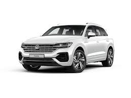
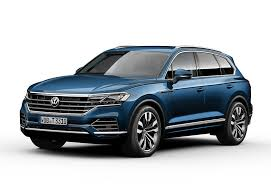

Volkswagen Touareg
New models 2019 year
 About
The Touareg (internally designated Typ 7L) was a joint venture project developed by Volkswagen Group, Audi and Porsche. The goal was to create an off-road vehicle that could handle like a sports car. The team, with over 300 people, was led by Klaus-Gerhard Wolpert and based in Weissach, Germany. The result of the joint project is the Volkswagen Group PL71 platform, shared by the Touareg, the Audi Q7 and the Porsche Cayenne, although there are styling, equipment, and technical differences between those vehicles. The Touareg and Porsche both seat five, while the Q7's stretched wheelbase accommodates a third row for seven passengers. The Volkswagen Touareg is built at the Volkswagen Bratislava Plant in Bratislava, Slovakia, alongside the Audi Q7 and Porsche Cayenne. Due to the demand, and the exchange rates of euros against the US dollar, as well as different pricing and environmental policies in the US, the V6 and V8 engine variants make up most of Volkswagen's American Touareg offering. Compared to other Volkswagen-branded vehicles sold in the US which are aimed at the mass market, Touaregs came in the more upscale trims and placed in competition with other luxury crossover SUVs from BMW and Mercedes-Benz.[1][2] However, a limited number of the V10 TDI Turbocharged Direct Injection (TDI) diesel engines was available in the 2004 model year (before being pulled for environmental reasons). They were brought back to the United States for the 2006 as a "Tier I emissions concept (43 state emissions)"
Models
- Touareg 2016
- Touareg 2015
- Touareg 2017
- Touareg 2019
| Model | Year | Engine type | Power, torque at rpm |
| Touareg 2016 | 2016 | 5,998 cc (366.0 cu in) W12 | 450 PS (331 kW; 444 bhp) |
| Touareg 2015 | 2015 | 5,998 cc (366.0 cu in) W12 | 450 PS (331 kW; 444 bhp) |
| Touareg 2017 | 2017 | 5,998 cc (366.0 cu in) W12 | 450 PS (331 kW; 444 bhp) |
| Touareg 2019 | 2019 | 5,998 cc (366.0 cu in) W12 | 450 PS (331 kW; 444 bhp) |
| Prise for all | 500000$+700000$+400000$+500000$ = 21000000$ | ||
If you want see more click here!